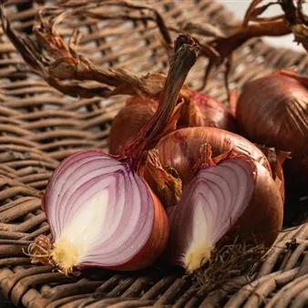

dom 4 ott
Treno storico Sapori d’Autunno 2026
Locomotiva elettrica con carrozze anni '30 "Centoporte" e bagagliaio. A bordo del treno storico i viaggiatori arriveranno a Cavasso Nuovo in occasione della tradizionale " FESTA D’AUTUNNO 2026 – 12^ Edizione Festa della Cipolla Rossa e della Zucca" iniziativa che vede come…
 Indicazioni
Indicazioni
- Costi e prenotazioni
- Costo non indicato · Prenotazione non indicata
- Programma
- Programma da verificare. Apri la fonte ufficiale per orari e possibili aggiornamenti.
- In caso di maltempo
- Nessuna indicazione specifica pubblicata.
- Note
- Acquisito automaticamente dalla fonte.
L’EVENTO
Descrizione completa
Locomotiva elettrica con carrozze anni '30 "Centoporte" e bagagliaio.
A bordo del treno storico i viaggiatori arriveranno a Cavasso Nuovo in occasione della tradizionale " FESTA D’AUTUNNO 2026 – 12^ Edizione Festa della Cipolla Rossa e della Zucca" iniziativa che vede come protagonista il presidio slow food "Cipolla Rossa di Cavasso Nuovo e della Val Cosa" e la zucca proponendo gli stand dei produttori e diversi piatti per valorizzare questo prodotto.
SACILE INFOPOINT
Tel. +39 0434 737292< info.sacile@promoturismo.fvg.it
Programma di dettaglio e attività
A bordo del treno storico i viaggiatori arriveranno a Cavasso Nuovo in occasione della tradizionale iniziativa che vede come protagonista il presidio slow food "Cipolla Rossa di Cavasso Nuovo e della Val Cosa" e la zucca proponendo gli stand dei produttori e diversi piatti per valorizzare questo prodotto. L’ evento, oltre a celebrare le specialità locali propone una piacevole serie di attività che includono gastronomia, musica, arte e cultura.Nello specifico:
ORE 10.00 APERTURA: Chioschi con prodotti enogastronomici stands produttori cipolla rossa di cavasso nuovo mercatino artigianale e chioschi con prodotti enogastronomici lungo le vie del paese ORE 10.30 LABORATORIO DI INTRECCIO. L’artista Giuseppe Gambon ci illustrerà la sua mostra di oggetti in legno, dando la possibilità a chi lo desidera di cimentarsi in un piccolo laboratorio.Presso il cortile interno “PALAZAT”. ORE 11.00 GIOCHI CURIOSI! Esperienze stimolanti e gioiose per bambini e adulti..Presso area verde sede degli ALPINI, Via della Rinascita.Chiusura ore 16.00 ORE 12.00 APERTURA CUCINE
con specialità tipiche con la PRO LOCO, le Associazioni e gli esercenti locali.Presso piazza Plebiscito, Piazza Vittorio Emanuele II° e lungo le vie del paese.
ORE 14.00 “MANDI TENDONE”Spettacolo musicale con due band giovanili.
ORE 14.30 TORNEO DI SCACCHI “SAN REMIGIO” a cura del circolo scacchi di Maniago.Presso sala convegni “PALAZAT”. Inizio iscrizioni ore 13.30
MOSTRE E APERTURE SPECIALI (TUTTE CON ENTRATA LIBERA)
Museo provinciale dell’emigrazione diogene penzi presso le sale al secondo piano del municipio “palazat” apertura straordinaria dalle ore 10.00 alle 17.00 con guida. Mostra fotografica “apocalisse” collettiva di riccardo brunetti e andrea schettin a cura di boris brollo. Presso le sale al primo piano del municipio “palazat” apertura straordinaria dalle ore 10.00 alle 17.00. Mostra fotografica diffusa “agrosfera” storie di tradizione e innovazione a cura del circolo fotografico l’obiettivo di pordenone con altri quattro circoli della regione friuli venezia giulia. Presso la sala “d” al primo piano del municipio “palazat”apertura straordinaria dalle ore 10.00 alle 19.00 Mostra di pittura “in punta di matita”, con un piccolo laboratorio, a cura del gruppo matite colorate. Presso la sala “affreschi” al piano terra del municipio “palazat”. Apertura straordinaria dalle ore 10.00 alle 19.00
INFORMAZIONI DI SERVIZIO AI PASSEGGERI:
All’arrivo alla Stazione di Fanna-Cavasso i passeggeri verranno trasferiti in Bus Navetta a Cavasso Nuovo e viceversa. Le navette sono incluse senza costi aggiunti per i passeggeri del treno storico.
11:21 Transfer in navette TPL FVG da Stazione FS di Fanna a Cavasso Nuovo
16:30 Transfer in navette TPL FVG da Cavasso Nuovo a Stazione FS di Fanna
Il rispetto degli orari è fondamentale per garantire il corretto svolgimento dell’esperienza di viaggio. Si invitano pertanto i passeggeri a prestare la massima attenzione agli orari di arrivo e di ripartenza del Treno Storico presso ciascuna stazione indicata nel programma, così come agli orari delle navette TPL FVG previste per i trasferimenti collegati alle attività a terra. La gestione del tempo rimane esclusiva responsabilità del viaggiatore: l’organizzazione non potrà garantire attese né potrà essere ritenuta responsabile per ritardi, mancati imbarchi o impossibilità di accesso ai mezzi dovuti a ritardi o disattenzioni da parte del passeggero, sia per quanto riguarda le ripartenze ferroviarie sia le coincidenze con le navette.
Orari del treno
Andata: Gorizia c.le 07.27
Udine 8.27
Gemona d.f. 9.14
Fanna 11.16
Ritorno:
Fanna 17.27
Gemona d.f. 19.12
Udine 20.08
Gorizia c.le 21.09
Tariffe:
Andata e ritorno in treno storico
Adulti 10€;
Ragazzi (dai 4 ai 12 anni non compiuti) 5€;
Bambini (dai 0 ai 4 anni non compiuti) gratis senza riservazione del posto a sedere
Biglietti in vendita attraverso tutti i canali Trenitalia: www.trenitalia.com • biglietterie e self-service di stazione • agenzie di viaggio abilitate.
ACQUISTA IL BIGLIETTO
IL PROGRAMMA
Programma e orari
Appuntamenti raccolti dalle fonti elencate. Dove manca un orario, non è ancora disponibile in questa scheda.
Programma pubblicato
- ORE 10.00 APERTURA:
- ORE 10.30 LABORATORIO DI INTRECCIO.
- ORE 11.00 GIOCHI CURIOSI!
- ORE 12.00 APERTURA CUCINE
- ORE 14.00 “MANDI TENDONE”Spettacolo musicale con due band giovanili.
- ORE 14.30 TORNEO DI SCACCHI “SAN REMIGIO” a cura del circolo scacchi di Maniago.Presso sala convegni “PALAZAT”. Inizio iscrizioni ore 13.30
- 11:21 Transfer in navette TPL FVG da Stazione FS di Fanna a Cavasso Nuovo
- 16:30 Transfer in navette TPL FVG da Cavasso Nuovo a Stazione FS di Fanna
INFORMAZIONI UTILI
Prima di partire
- Controllare la fonte prima di partire.
ORGANIZZAZIONE